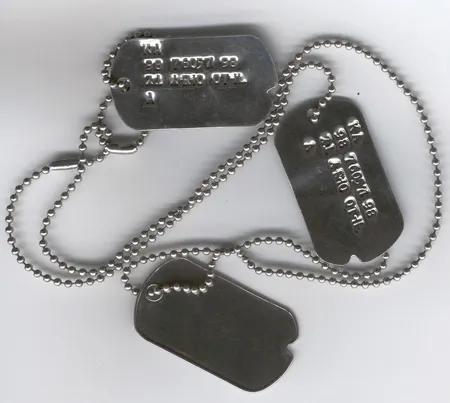
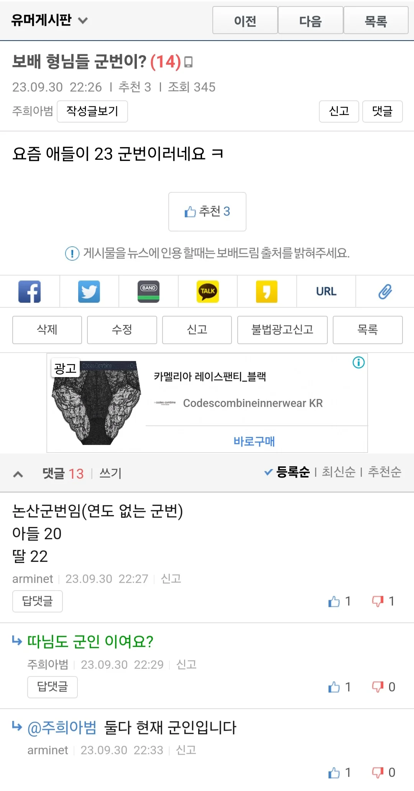

까먹어지지도않음ㅋㅋ 군번 주특기 총번ㅋㅋ
13-760447xx
총번 632577
머리가 안 좋아서 그런가 기억도 안나네
10-7000XXXX
11-50XXXX
16-1XXXX
힘들었읍니다..
임관했네?
총기번호는 기억 안나고 군번은 12-700133xx
총기는 5번 넘게 바뀐터라 기억 잘 안나는데 마지막 k2c1 2000629 인가 그러고 15-73017xxx
총번은 기억 안나는데 군번은 기억 더듬으면 나네.. 훈련소에서 워낙 xx - xx기! 하고 호령하던 조교 목소리가 귀에 박혀서 그거부터 더듬으면 뒷 번호까지 기억남
와 틀니딱딱
주특기 번호 말곤 군번이랑 총번은 기억난다
17-72011xxx
총기번호는 군 생활동안 총을 4번이나 바꿔대서 기억 안남.
K2->m16->m60->k2->파견 복귀 후 k2 재지급
나랑 비슷하네...
난 K1 - K6 -M60 -K1
좀 헷갈리긴함
10-76011xxx
틀딱행님들 짱많네
저땐 부조리도 존나심했다는데 ㅜ 다들 고생많았수다
24-760xxxxx
67xxxx
아잇 너때문에 생각났자나
다들 입대곡 뭐임 나는 14년 11월 AOA 사뿐사뿐 ㅋㅋ
09-108xx
20-160XX
법무관 복무 ㅋㅋ
12-76******
산업체도 도중에 한달 갓다왓는데 요즘은 아예 안가?
안잊을거 같았는데도 10년 지나니까먹네
공오다시 칠삼공넷여섯하나넷아홉
상병때 총 바뀌었는데 바뀐 총번은 기억이 안나네
신교대에서 18발 맞추고 전화찬스 받았는데 자대에서 받은 k1으로는 10발 언저리라 갈굼 졸라 먹다가 상병때 이동정비였나 정비 받으니 총열이 휘었대ㅋㅋ
새총 받고 바로 19발 쏨
전역한지 20년 다 되가는데 아직도 그때만 생각하면 짜증남
주특기는 근데 어케알고있는거임? 알려주지도않고 쓰이지도안는거 전역증에만 써잇던데